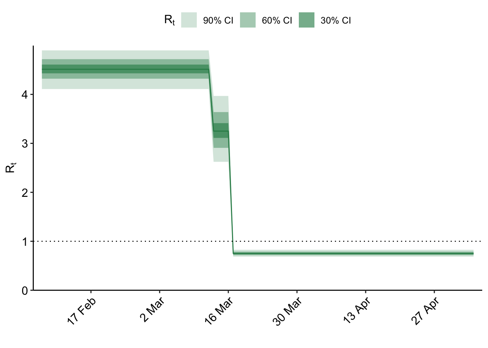
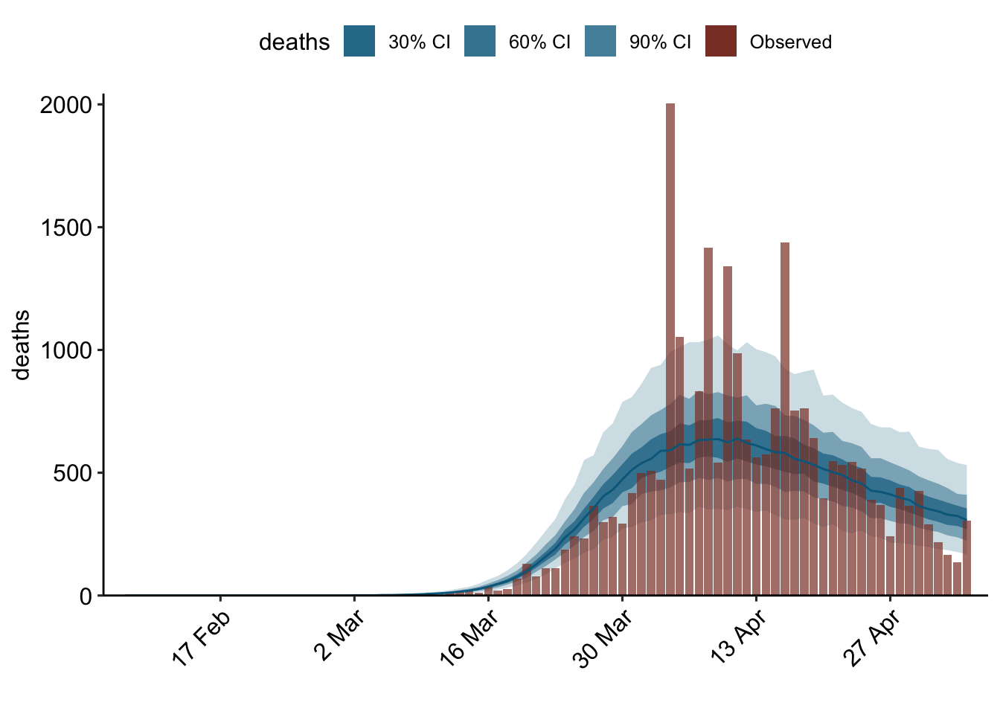

Here we give a high-level overview of the workflow required for defining and fitting a model with
epidemia. The primary model fitting function is epim(). This takes a model description and
additional arguments relating to the fitting algorithm, and proceeds to fit the model using a
precompiled Stan program. This allows model fitting to begin immediately as opposed to requiring compilation each time
epim() is called.
This is similar to the workflow for fitting Bayesian regression models
with rstanarm. A key difference, however, is that the models fit by epidemia are much more
complex, and are therefore inherently more difficult to specify. epidemia aims to simplify this process
by modularising the model definition into three distinct parts: transmission,
infections and observations. These components of the model are defined with the functions epirt(), epiinf() and
epiobs() respectively.
epidemia contains an example dataset EuropeCovid which contains data
on daily death counts from Covid-19 in 11 European Countries from February through May 2020, and a set
of binary indicators of non-pharmaceutical interventions. This is
used as an example throughout.
We begin by describing epim() in more detail, and then proceed to discuss the three modeling functions.
epim() is the only model fitting function in epidemia. It has arguments rt, inf, and obs which
expect a description of the transmission model, infection model and all observational models respectively.
Together, these fully define the joint distribution of data and parameters. Each of these model components are
described in terms of variables that are expected to live in a single dataframe, data. This dataframe
must be compatible with the model components, in the sense that it holds all variables defined in these
models. For our example, these variables are the following.
data <- EuropeCovid$data colnames(data)
## [1] "country" "date"
## [3] "schools_universities" "self_isolating_if_ill"
## [5] "public_events" "lockdown"
## [7] "social_distancing_encouraged" "deaths"
## [9] "pop"The data argument is described in more detail in Section 6.
In addition to taking a model description and a dataframe,
epim() has various additional arguments which specify how the model should be
fit. If algorithm = "sampling" then the model
will be fit using Stan’s adaptive Hamiltonian Monte Carlo sampler. This
is done internally by calling rstan::sampling. If algorithm = "meanfield" or
algorithm = "fullrank", then Stan’s variational Bayes algorithms are used
instead, by calling rstan::vb. Any unnamed
arguments in the call to epim() are passed directly onto the rstan
sampling function. epim() returns a fitted model object of class
"epimodel", which contains posterior samples from the model along with other
useful objects.
In general, the adaptive Hamiltonian Monte Carlo sampler
should be used for final inference. Nonetheless, fitting these models
using HMC is often computationally demanding, and variational Bayes can often be
fruitful for quickly iterating models. All arguments for epim() are described in Table
2.1.
| Argument | Description |
|---|---|
rt
|
An object of class "epirt", resulting from a call to epirt(). This defines the model for reproduction numbers \(R\).
|
inf
|
An object of class "epiinf", resulting from a call to epiinf(). This entirely defines the model for infections \(i_t\).)
|
obs
|
Either an object of class "epiobs", or a list of such objects. Each element of the list defines a model for an observed variable.
|
data
|
A dataframe with all data required for fitting the model. This includes all observation variables and covariates specified in the models for the reproduction number and ascertainment rates. |
algorithm
|
One of "sampling", "meanfield" or "fullrank". This determines the rstan sampling function to use for fitting the model. "sampling" corresponds to an adaptive HMC sampler, while "meanfield" and "fullrank" are both variational Bayes algorithms.
|
group_subset
|
If specified, a character vector naming a subset of regions to include in the model. |
prior_PD
|
Same as in rstan::stan_glm. If TRUE, samples all parameters from their prior distributions. This is useful for prior predictive checks. Defaults to FALSE.
|
| … |
Additional arguments to pass to the rstan function used to fit the model. If algorithm = "sampling", then this function is rstan::sampling. Otherwise rstan::vb is used.Please see the documentation for these functions.
|
We now describe the three modeling functions in more detail, starting with epirt().
epirt() defines the model for time-varying reproduction numbers, which
was described in Section 4 of the model description article.
It has a formula argument which defines the linear predictor \(\eta\), an
argument link defining the link function g, and additional arguments to
specify priors on parameters making up \(\eta\).
A general R formula gives a symbolic description of a model. It takes the form
y ~ model, where y is the response and model is a collection of terms
separated by the + operator. model fully defines a linear predictor used to
predict y. In this case, the “response” being modeled are reproduction numbers which are
unobserved. epirt therefore requires that
the left hand side of the formula takes the form R(group, date), where group
and date refer to variables representing the region and date respectively.
The right hand side can consist of fixed effects, random effects, and
autocorrelation terms. For our example, a viable call to epirt() is the
following.
rt <- epirt( R(country, date) ~ 1 + lockdown + public_events, link = scaled_logit(7) )
In the above example, two fixed effects are included which represent the
effects of lockdown and public events. These effects are assumed constant across
countries. They could alternatively be partially
pooled by using the term (lockdown + public_events | country).
For information on how to interpret such terms, please read the partial-pooling
article. Using link = scaled_logit(7) lets the link function be the
scaled logit link described in the model description article (Equation 4.2),
where \(K = 7\) is maximum possible value for reproduction numbers.
For simplicity, we have omitted any prior arguments, however these
should generally be specified explicitly. Please see
here for detailed information on how to use priors. All arguments
for epirt() are listed in Table 3.1.
| Argument | Description |
|---|---|
formula
|
An object of class "formula" which determines the linear predictor \(\eta\) for \(R\). The left hand side must take the form R(group, date), where group and date variables. group must be a factor vector indicating group membership (i.e. country, state, age cohort), and date must be a vector of class "Date". This is syntactic sugar for the reproduction number in the given group at the give date.
|
link
|
The link function \(g\). Can be "log", "identity" or a call to scaled_logit(). Defaults to log.
|
center
|
If TRUE, covariates in formula are centered to have mean zero. All priors should then be interpreted as priors on the centered covariates.
|
prior
|
Same as in rstanarm::stan_glm. Defines the prior on \(\beta\). rstanarm provided priors, a shifted_gamma can be used. Note if autoscale=TRUE in the call to the prior function, then automatic rescaling takes place.
|
prior_intercept
|
Same as in rstanarm::stan_glm. Prior for the regression intercept \(\beta_0\) (if it exists).
|
prior_covariance
|
Same as in rstanarm::stan_glmer. Defines the prior on the covariance matrix \(\Sigma\). Only use if the formula has one or more terms of the form (x | y), in which case there are parameters to partially pool, i.e. \(b\) has positive length.
|
The model for infections is represented by epiinf(). For the
basic version of the model, this defines the generation distribution
of the disease, the number of days for which to seed infections, and the
prior distribution on the parameter \(\tau\) (Equation 3.2). Recall that \(\tau\) is
the prior mean on daily seeded infections. These three parameters are
controlled by the arguments gen, seed_days and prior_tau respectively.
For our example, a possible model is the following.
inf <- epiinf( gen = EuropeCovid$si, seed_days = 6L, prior_tau = rstanarm::exponential(0.02) )
EuropeCovid$si is a numeric vector representing the probability mass
function for the serial interval of Covid-19. Here, we are implicitly assuming
that the generation distribution can be approximated well by the serial interval.
In this example, \(\tau\)
is given an exponential prior with a mean of 50. These seeds
occur over a period of 6 days.
epiinf() has additional arguments which allow the user to extend the basic
model. Using latent=TRUE replaces the renewal process (Equation 1.3) with
Equation 5.1. Daily infections are then treated as latent parameters that are
sampled along with other parameters. The family argument then gives
the distribution for \(p(i'_t, d)\), while prior_aux defines the prior on the
coefficient of dispersion \(d\).
Recall that one can adjust the infection process to explicitly
model changes in infection rates as the remaining susceptible population is
depleted. In particular, the adjustment ensures that cumulative infections
never breaches the initial susceprible population. The adjustment was described
in Section 5.3 of the model description article. It can be employed by
setting pop_adjust = TRUE and using the
susceptibles argument to point towards a variable in the dataframe which gives
the susceptible population at each point in time. All argument to epiinf() are
described in Table 4.1.
| Argument | Description |
|---|---|
gen
|
A numeric vector giving the probability mass function \(g_k\) of the generation distribution. Must be a simplex vector, i.e. nonnegative and summing to 1. |
seed_days
|
An integer giving the number of seed days \(v + 1\). Defaults to 6L. |
latent
|
If TRUE, treat infections as latent parameters using the extensions described in Section 5.2.
|
family
|
Specifies the family for \(p(i'_t, d)\). Only used if latent = TRUE, and currently restricted to log-normal.
|
prior_aux
|
Prior on the coefficient of variation \(d\). |
prior_tau
|
Prior distribution for the hyperparameter \(\tau\), which is the mean of the prior distribution for infection seeding. Defaults to rstanarm::exponential(0.03).
|
pop_adjust
|
If TRUE, applies a population adjustment to the infection process \(i_t\). Defaults to FALSE.
|
susceptibles
|
A character vector giving the name of the variable corresponding to the susceptible population over time. Only used if pop_adjust=TRUE.
|
Each observational model is given by a call to epiobs(). In particular,
this must define the model for ascertainment rates \(\alpha\) and the time distribution
from infection to observation \(\pi\). epiobs() has a formula argument. The left hand
side must define the observation vector \(Y\) which is to be modeled, while the
right hand side defines a linear predictor for the ascertainment rate \(\alpha\).
The argument i2o plays a similar role to the gen argument in epiinf(),
however it instead defines the vector \(\pi\) in Equation (1.2).
Suppose we wish to model daily deaths, which as we saw is a variable in data.
One could use the following.
deaths <- epiobs( deaths ~ 1, i2o = EuropeCovid$inf2death, link = scaled_logit(0.02) )
The above models the infection fatality rate, \(\alpha\), as an intercept transformed by the scaled logit
link. This implies that it is constant over time, can achieve a maximum value of
2%, and a minimum value of 0%. If prior_intercept is chosen to be symmetric
around zero, then the prior mean of \(\alpha\) is 1%. EuropeCovid$inf2death is
a numeric simplex vector that gives the same delay distribution as used in
Flaxman et al. (2020), which is a discretised p.d.f. of a mixture of Gamma random variables.
Additional arguments include family, which specifies the sampling distribution
\(p(y_t, \phi)\). There are also arguments allowing the user to control
prior distributions for parameters describing \(\alpha\), and the prior on the
auxiliary variable \(\phi\). All arguments to epiobs() are shown in Table
5.1.
| Argument | Description |
|---|---|
formula
|
An object of class "formula" which determines the linear predictor for the ascertainment rate for a particular observation vector. The left hand side must define the response that is being modeled (i.e. the actual observations, not the latent ascertainments)in a given country on a given date. obs refers to the response variable to be modeled.
|
i2o
|
A numeric (simplex) vector defining the probability mass function \(\pi_k\) of the time distribution from infection to observation. |
family
|
A string representing the family of the sampling distribution \(p(y_t,\phi)\). Can be one of "poisson", "neg_binom", "quasi_poisson", "normal" or "log_normal".
|
link
|
A string representing the link function used to transform the linear predictor. Can be one of "logit", "probit", "cauchit", "cloglog", "identity". Defaults to "logit".
|
center, prior, prior_intercept
|
same as in epirt(), described above.
|
prior_aux
|
The prior distribution for the auxiliary parameter \(\phi\), if it exists. Only used if family is "neg_binom" (reciprocal dispersion), "quasi_poisson" (dispersion), "normal" (standard deviation) or "log_normal" (sigma parameter).
|
...
|
Additional arguments for model.frame.
|
Recall that the data argument to epim() must contain all variables used in the transmission, infection and
observational models. For our example,
this looks like
data## # A tibble: 899 x 9
## # Groups: country [11]
## country date schools_univers… self_isolating_… public_events lockdown
## <fct> <date> <int> <int> <int> <int>
## 1 Austria 2020-02-22 0 0 0 0
## 2 Austria 2020-02-23 0 0 0 0
## 3 Austria 2020-02-24 0 0 0 0
## 4 Austria 2020-02-25 0 0 0 0
## 5 Austria 2020-02-26 0 0 0 0
## 6 Austria 2020-02-27 0 0 0 0
## 7 Austria 2020-02-28 0 0 0 0
## 8 Austria 2020-02-29 0 0 0 0
## 9 Austria 2020-03-01 0 0 0 0
## 10 Austria 2020-03-02 0 0 0 0
## # … with 889 more rows, and 3 more variables:
## # social_distancing_encouraged <int>, deaths <int>, pop <int>The columns country and date define the region and time period corresponding to each of the remaining
variables. epim() assumes that the first seeding day (i.e. the start of the epidemic) in each region
is the first date found in the dataframe. The last date is the final date at which the epidemic is
simulated for the group. It is up to the user to appropriately choose these dates. For our example,
the first and last dates for each group can be seen as follows.
## `summarise()` ungrouping output (override with `.groups` argument)## # A tibble: 11 x 3
## country start end
## <fct> <date> <date>
## 1 Austria 2020-02-22 2020-05-05
## 2 Belgium 2020-02-18 2020-05-05
## 3 Denmark 2020-02-21 2020-05-05
## 4 France 2020-02-07 2020-05-05
## 5 Germany 2020-02-15 2020-05-05
## 6 Italy 2020-01-27 2020-05-05
## 7 Norway 2020-02-24 2020-05-05
## 8 Spain 2020-02-09 2020-05-05
## 9 Sweden 2020-02-18 2020-05-05
## 10 Switzerland 2020-02-14 2020-05-05
## 11 United_Kingdom 2020-02-13 2020-05-05These start dates are 30 days prior to observing 10 cumulative deaths in each country.
We are ready to fit out first model. This is done by returning to the model
fitting function epim(). Our call is as follows. Note that we use refresh=0
to suppress the algorithm printing output in this article - however this should be disabled
when you run models for yourself as this output is useful.
fm <- epim( rt = rt, inf = inf, obs = deaths, data = data, group_subset = "France", algorithm = "fullrank", tol_rel_obj = 1e-3, seed = 12345 )
## Chain 1: ------------------------------------------------------------
## Chain 1: EXPERIMENTAL ALGORITHM:
## Chain 1: This procedure has not been thoroughly tested and may be unstable
## Chain 1: or buggy. The interface is subject to change.
## Chain 1: ------------------------------------------------------------
## Chain 1:
## Chain 1:
## Chain 1:
## Chain 1: Gradient evaluation took 0.000399 seconds
## Chain 1: 1000 transitions using 10 leapfrog steps per transition would take 3.99 seconds.
## Chain 1: Adjust your expectations accordingly!
## Chain 1:
## Chain 1:
## Chain 1: Begin eta adaptation.
## Chain 1: Iteration: 1 / 250 [ 0%] (Adaptation)
## Chain 1: Iteration: 50 / 250 [ 20%] (Adaptation)
## Chain 1: Iteration: 100 / 250 [ 40%] (Adaptation)
## Chain 1: Iteration: 150 / 250 [ 60%] (Adaptation)
## Chain 1: Iteration: 200 / 250 [ 80%] (Adaptation)
## Chain 1: Iteration: 250 / 250 [100%] (Adaptation)
## Chain 1: Success! Found best value [eta = 0.1].
## Chain 1:
## Chain 1: Begin stochastic gradient ascent.
## Chain 1: iter ELBO delta_ELBO_mean delta_ELBO_med notes
## Chain 1: 100 -1615.837 1.000 1.000
## Chain 1: 200 -885.408 0.912 1.000
## Chain 1: 300 -606.618 0.762 0.825
## Chain 1: 400 -504.308 0.622 0.825
## Chain 1: 500 -462.445 0.516 0.460
## Chain 1: 600 -447.671 0.435 0.460
## Chain 1: 700 -449.618 0.374 0.203
## Chain 1: 800 -435.950 0.331 0.203
## Chain 1: 900 -435.095 0.294 0.091
## Chain 1: 1000 -422.491 0.268 0.091
## Chain 1: 1100 -424.864 0.168 0.033
## Chain 1: 1200 -421.377 0.087 0.031
## Chain 1: 1300 -414.988 0.042 0.030
## Chain 1: 1400 -415.822 0.022 0.015
## Chain 1: 1500 -413.944 0.014 0.008
## Chain 1: 1600 -412.360 0.011 0.006
## Chain 1: 1700 -410.027 0.011 0.006
## Chain 1: 1800 -408.316 0.008 0.006
## Chain 1: 1900 -408.288 0.008 0.006
## Chain 1: 2000 -405.559 0.006 0.006
## Chain 1: 2100 -407.560 0.006 0.005
## Chain 1: 2200 -406.630 0.005 0.005
## Chain 1: 2300 -404.974 0.004 0.004
## Chain 1: 2400 -403.195 0.004 0.004
## Chain 1: 2500 -403.052 0.004 0.004
## Chain 1: 2600 -402.653 0.003 0.004
## Chain 1: 2700 -402.449 0.003 0.004
## Chain 1: 2800 -401.054 0.003 0.003
## Chain 1: 2900 -402.901 0.003 0.004
## Chain 1: 3000 -400.305 0.003 0.004
## Chain 1: 3100 -401.745 0.003 0.004
## Chain 1: 3200 -401.820 0.003 0.004
## Chain 1: 3300 -400.202 0.003 0.004
## Chain 1: 3400 -400.708 0.003 0.003
## Chain 1: 3500 -399.987 0.003 0.003
## Chain 1: 3600 -398.969 0.003 0.003
## Chain 1: 3700 -398.404 0.003 0.003
## Chain 1: 3800 -398.867 0.003 0.003
## Chain 1: 3900 -398.374 0.002 0.002
## Chain 1: 4000 -398.921 0.002 0.001
## Chain 1: 4100 -398.501 0.002 0.001
## Chain 1: 4200 -398.335 0.002 0.001
## Chain 1: 4300 -398.306 0.001 0.001
## Chain 1: 4400 -398.273 0.001 0.001
## Chain 1: 4500 -398.207 0.001 0.001 MEAN ELBO CONVERGED
## Chain 1:
## Chain 1: Drawing a sample of size 1000 from the approximate posterior...
## Chain 1: COMPLETED.## Warning: Pareto k diagnostic value is 0.76. Resampling is unreliable. Increasing
## the number of draws or decreasing tol_rel_obj may help.plot_rt(fm)
## Registered S3 methods overwritten by 'car':
## method from
## influence.merMod lme4
## cooks.distance.influence.merMod lme4
## dfbeta.influence.merMod lme4
## dfbetas.influence.merMod lme4
plot_obs(fm, type = "deaths")

Flaxman, Seth, Swapnil Mishra, Axel Gandy, H Juliette T Unwin, Thomas A Mellan, Helen Coupland, Charles Whittaker, et al. 2020. “Estimating the effects of non-pharmaceutical interventions on COVID-19 in Europe.” Nature. https://doi.org/10.1038/s41586-020-2405-7.